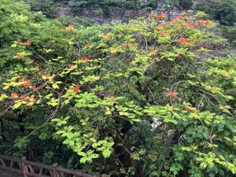
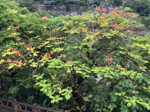
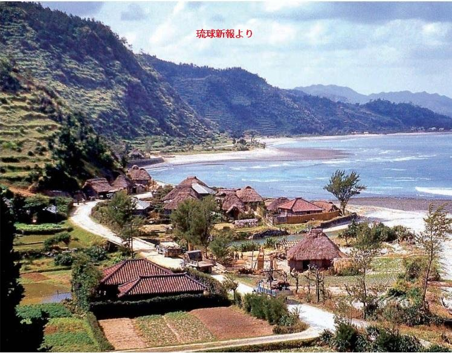

うるがいの話 ある日
最新: ６月なのに寒い【うるがいの話 ある日】とは 一日だけのプログです
『うるがいの話』の最新一日だけのプログで、通信料が少なく経済的だ。カニの画像をクリックすると全ての日付が載る『うるがいの話』サイトを表示します
|
|
【うるがいの話】 うるがい(ｳﾙｶﾞｲ urugai)とは、『もずくがに』の名前でとても大きくなります。 |
|---|---|
|
|
【カミマヤーの話】 猫のことを方言でマヤーといいます。カミマヤー（kamimayaa）とは、神の猫のことです。 |
|
【たながぁの音楽】 たながぁ（ﾀﾅｶﾞｰ tanagaa）とは手長えびのことで、何種類かあり大きいのは車 エビぐらいになります。 |

|
【ぶながぁの話】 ぶながぁ(ﾌﾞﾅｶﾞｰ bunagaa)とは、赤い髪の毛、赤い身体、そして身長は１ｍ２０ｃｍ ぐらい、川の蟹を食べているの目撃された。場所は沖縄県国頭郡大宜味村のと ある村僕の隣近所に住んでいる爺さんから、聞いた話です。 |
|
|
【ギーマの話】 ギーマ(giima)とは、山原の里山に咲くスズランに似た、 花を付けます。実は食べられます、 気が付くと口の周りが紫になっています。 |
2024年06月03日 (月）６月なのに寒い
15:13
 

朝の気温１９度、昼前までなかなか気温が上がらなかった。きのう、寝る前
に念のため冬のフトンを準備した（一応使わずに済んだ）。ただ、重ね着を
しないといけなかった。
昨日、愛の不時着１６話を全て視聴する。面白かった、その後で録画してい
た『ある脳外科医の日記（８話）』を、見ていたら北朝鮮からの衛星発射の
緊急速報・・が、
ma3********さん
2024/5/28 0:33
こんばんは。ドラマアンメットが緊急速報で、
中断しましたが、後の内容を教えて下さい。
風さん
2024/5/28 10:47
ネタバレです。・・・・・
質問者からのお礼コメント
有り難う御座いました。
良い終わり方で良かったです。
お礼日時：5/28 12:09
楓@ミク廃さん
2024/5/28 8:46
関東では再放送するらしいですよ。
関東以外ならTVerとかでみれると思います。
補足ですが、
30分後ほどに再開してたらしいです。
緊急速報は沖縄だけではと、ヨメに言ったが全国だった。ＴＶｅｒで見逃し
箇所を見る事にする。

琉球新報に１９５４年伊地の写真が載っていた。小さい頃の風景だ！、家か
ら山をみると段々畑が、写真のようにあった。
１５時０５分 ビットコインの総資産 ￥３１、３０１（↑２９４）